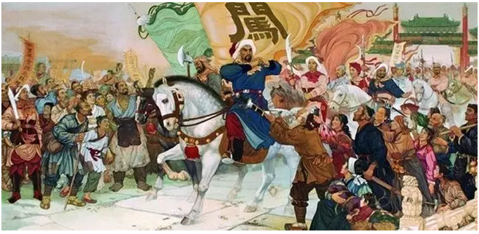
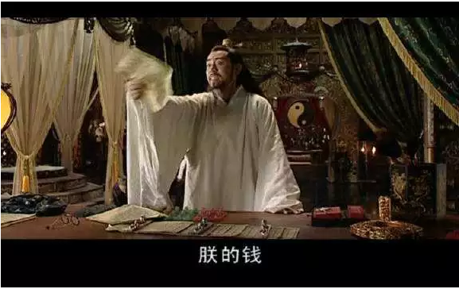
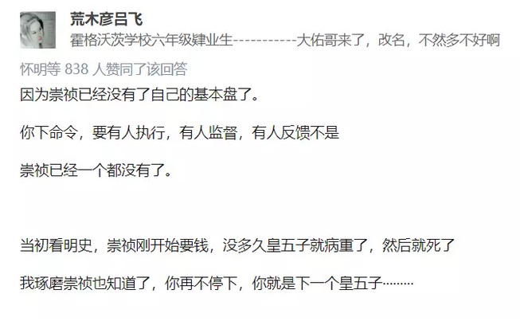
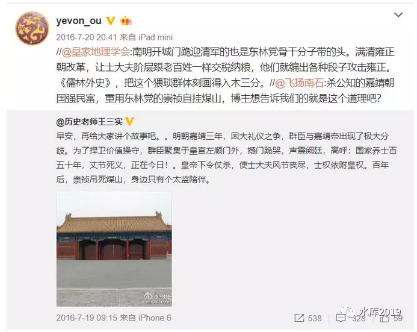
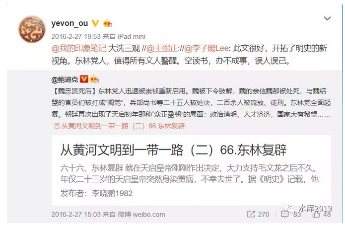

大学生为什么不给官做了 #F1820
yevon_ou [水库论坛] 2018-06-13

大学生为什么不给官做了 #F1820
本文为历史
一） 序言
上周苦于没有话题写。正好逢到6.7日高考，被观澜团队，拉到了天津，做了一场关于"学区房和商品房"的讲座。
在路上，我看了一篇画生写的《139：年轻人会信仰市场么》，不禁抚掌大笑。
画生年轻人，总是很给我新的启发，新的视角。
关于"高考"这事，倒可以展开说说。只不过铺垫很长很长。
本文估计约11000字。全部看完，会消耗您半个小时时间。
因为这实在是一个很复杂的逻辑，象当初写《六国论》一样，需要一层一层把道理剥开。
二） 崇祯
首先我们来讲"明史"。明末的灭亡，是中国历史上，最不可思议的一幕之一。
崇祯朝，十七年。
一直到崇祯十六年，"朝廷"还占据着绝对的优势。
天下九州，崇祯十六年的时候，李自成还困在河南。祸害不过一省。潼关的口子，无论如何也打不通。
张献忠被左良玉层层压迫，逃逸湖南。
辽宁省有"建奴"。建奴兵锋虽然厉害，可却是年年闹饥荒。
以辽宁吉林苦寒之地，根本养不起十万大军。全民皆槟的结果，皇太极每年为吃饭发愁。
只要官军紧守关隘，不求胜利。三年不被抢，建奴就得裁员。
1643年，大明皇帝放眼四顾，踌躇满志。
全国90%的土地，税赋，人口，依然掌握在朝廷手里。
更有皇帝"大义"的名分。
如果输入《三国志》游戏，那至少是95%以上的胜率。
换作任何一个思宗，"剿匪"都不是大问题。"明廷"上上下下，没一个为生存发愁。
大臣们普遍认为，就算有流寇，也是"芥藓之疾"。士大夫的目光，还是放在"党争"。
复社和温体仁、周廷儒，斗得不亦乐乎。
可是谁能想到，仅仅一年之后，大明就亡了呢。
不仅仅明朝亡了，而且"朱家"子孙被杀得干干净净。再也不能复起。
这么大的地盘，土地，居然是被人一块块打下来的。输得干干净净。

三） 缺饷
大明亡得非常快。
崇祯十七年2月，李自成在西安称帝。
3月10日，试探性地渡过黄河攻击。
3月13日，打下太原。
4月21日，打下北京门户居庸关。
4月25日，崇祯上吊。

可见，这个速度是非常非常惊人的。简直就和人"步行"的速度一样快。
你从陕西走到北京，二个月时间都不够。
北京的城墙，是当时最高最坚固的。一般认为，在冷兵器时代，"攻城"是不可想象的。
"战五渣"北宋钦徽二宗都撑了21天，而明思宗，一天就陷落了。[1]
这一切的背后，有什么奥秘呢。我们可以参见这个贴子：
《李自成伐明，为什么三次檄文，口气一次比一次软弱》[2]
李自成刚离开西安的时候，只有二万先锋部队。试探性的攻击，夺取河东几个郡县就满意了。
因此他发布了一篇"战前动员"，口气可是十分嚣张：
"嗟尔明朝，大数已终。诞我圣主，海宇归心"
二万部队一过河，对面拥过来十几万明军。刘宗敏吓一跳，刚想扎寨。
明朝总兵刷地举起白旗，"别开枪，别开枪，我们投降"。
十几万官兵，追着找二万叛军。就为了凑上去投降。找了你好几天。
为什么。
因为明兵已经十几个月欠饷。当兵的穷得老婆孩子都快饿死了。

李自成从西安，到太原，再到大同，居庸关。
保大，宣武，理论上都有数十万的兵力。是永乐帝留下的，拱卫京师九大军镇。
可是李自成一路走过来，这些军镇望风投降。一个比一个快。要求只有一个："尽快发饷"。
李自成嘴里发苦。他老巢只有西安一地，哪来这么多银粮送人。因此他只有一条路，越滚越大"继续向前，北京花花世界"。
就这样，李自成嫡系只有六万人马，可是裹挟着"百万大军"。大顺军已经成了一个庞然蝗虫团。一口气走到崇祯脚下。
西直门外，李自成望怂了。
绝对优势下，百万大军对二万。帝位唾手可得。
李自成却让人给崇祯帝送了一份"降表"，要求放低得不能再低："勋言李欲割西北一带，敕命封王，并犒军银百万，退守河南。受封后，愿为朝廷内遏群贼，外制辽沈，但不奉召入觐。"
-
给我100W两白银
-
封西北王（降帝号）
-
接受招安
这份"议和诏书"，最核心的是第一条："赏银100万两"。
大家都是聪明人，懂得真正的政治。
李自成知道他手下这些"降兵"都是饿狼，早上喊你大王，晚上就会反噬，咬主。
因此喂食是第一位的。得先把这些饿狼打发了。
至于大顺军，留个西北旺也就够了。
崇祯接到了诏书，哈哈大笑。"小样的，你也知道放火上烤的滋味"。
"要钱没有，要命一条"
二天之后，李自成攻破北京。崇祯自缢。明朝灭亡。
崇祯宁可自缢，也不接受李自成的投降。
这种历史博弈，小白是永远也看不懂的。
一些参考资料。洪承畴在松锦之战的失利，也是因为打到一半"断饷了"。
-
《在松锦之战中明军是否有获胜的机会？》[3]
-
《大明灭亡前的最后80天》[5]
-
《大明王朝1566》中，严党最后关头怎么会那么傻只分给皇帝一百万，犯这么低级的错误？》[6]
四） 抄家
好了，我们进入第三个环节。崇祯能不能"搞钱"。
知乎有一个大热的帖子：《崇祯为什么宁可哀求大臣和亲戚、最后自尽了也没有抄他们的家？》[7]
只要一百万，就能暂缓崇祯的命。
在崇祯最后的，最困难的岁月。他向各方勋贵募捐。苦口婆心"大明的船沉了，大家一起完蛋"。
但是国丈尚书，都不肯掏钱。周皇后的老爸，掏了8000两银子。大学士魏藻德，只肯掏500两银子。
李自成攻破北京之后，发现"崇祯内府"只有13万两白银，完全不够犒赏"降兵"。不由大为失望。
此时，他的手下已经开始失控。"百万降卒"开始洗劫权贵，进入了"十一天狂欢"。
按照民科的说法，北京城破之后，周国丈被拷打出来57万两白银。陈演被拷打出四万两白银。北京城合计掠夺7000万两白银。
这充分证明了富人的愚蠢，地主的愚蠢，贵族的愚蠢，blablabla.........
只可惜，这个说法是错误的，虚拟的。其来源自《明季北略》：
"贼拘银匠数百人，凡所掠金银，俱倾成大砖，以骡马骆驼驮往陕西。旧有镇库金，积年不用者，三千七百万锭，锭皆五百两，镌有永乐字，每驮二锭，不用包裹。
大顺军掠夺北京的白银，重新融化成五百两一块的"银板"，便于携带。
一片石战役之后，农民军仓皇逃窜。"银板"不知所踪，并最终成为了"李自成宝藏"。
7000万两这个说法，来自于3700匹骡*2袋*10锭*500两。
而事实上，哪有可能整支车队都是饷银的。能有1/10就不错了。
更专业的分析，可参见这个帖子。
《崇祯缺钱，为什么不像李自成一样对文臣严刑拷打，弄来几千万两银子交给武将用作军饷?》[8]
作者查阅满清入关之后，豪格+阿济格+多铎，三路清军抢劫了半年。
上报给清廷总部，说抢到200万两。
考虑到将领贪污一半，实际搜刮400万两。

不管怎么说，200万两也算一笔不小的钱了。
不仅可以暂时"招降"李自成。而且可以募一支精兵。
按照明朝后期，大致是100两=1兵的算法。
1000万两辽饷，可以养十万兵。
200万两辽饷，可以养二万精兵。
崇祯连一个兵也没有。
参考阅读：
《李自成进北京：国库存银十余万抄家抄出七千万两》[9]
《崇祯为什么宁可哀求大臣和亲戚、最后自尽了也没有抄他们的家？》[10]
《此人替崇祯御驾亲征却"自杀未遂"投降，临死问50个小妾谁陪葬》[11]
五） 鬼神
崇祯十七年，叛军云集。明朝覆亡在即。
崇祯下令抄家。哪怕再不利，皇帝的命都快没了。还顾忌什么"短期利益"长期利益。
第一个目标，订上了武清侯李国瑞。江湖传言，李国瑞有40万两银子身家。
崇祯缺钱。
你猜，李自成能榨出百万白银。作为一名"名正言顺"的皇帝，崇祯随便找个理由，就能捏死李国瑞。崇祯从李国瑞身上榨出了多少油：
-
40万两
-
30万两
-
20万两？
-
正确的答案，是0
因为正当崇祯决定不要脸，不给脸，和群臣撕破脸的时候，突然发生了一件事：
他的五皇子死了。
崇祯一共有七子，后四个都是夭折。史书没有记载。但应该不超过7岁。
死个小孩子，本不是大事。但历史的诡异，或者说本文的题眼，在此处才渐渐露出了阴暗的下半部............
因为崇祯想起了一个人。他的亲哥哥：明熹宗朱由校。
明史最诡异之处，明有二个"盛年天子"是坠船死的。
哥哥：明武宗 堂弟：嘉靖
哥哥：明熹宗 弟弟：崇祯
明武宗有大太监"刘瑾"，人称"立皇帝"。宦官一度权倾朝野。30岁的时候，突然坠水，然后就再也医治不好。八个月后驾崩。
明熹宗有著名的"魏忠贤"。九千岁势力权倾朝野。熹宗游玩的时候，照样"坠水"。宰相们呈献"仙丹"，服用后全身肿胀，不久也死了。

哦，还有半个例子。是崇祯的曾曾祖父。大名鼎鼎的"嘉靖帝"朱厚熜。
嘉靖帝睡着的时候，居然有15个宫女，联手用绳索绞死皇帝。
中国唯一一次，宫女造反记录。
事后，官方宣布是宫女自发行为。绝对没有幕后黑手。不扩大追究。
你说，你信不信呀。
[www.zhihu.com/question/63598657/answer/370619065]

正史中记载，崇祯敬拜鬼神，因为五皇子死了，"惊惧"停止了对大臣们的抄家。
但其实，崇祯是"你懂的"。朱由校走的时候，他就在身边。
《绣春刀2》讲的并不是虚构的故事。
"文官"们胆子之大，是令人震惊的。
皇帝"生命"之脆弱，也是令人震惊的。
崇祯，并不是不想抄群臣的家。他是真没这个能力抄家。
李自成，不想骤起骤落。他是真下盘不稳。
这里，就牵涉到一个非常重要，你们老师永远也不会教的概念：
基本盘
六） 忽悠权
在上古时期，君臣是可以坐在草席上咬耳朵的。
在汉唐时期，宰相在金銮殿有张椅子。
宋太祖赵匡胤手里，撤掉了椅子。
明太祖朱元璋，废除了宰相。改成了正五品的大学士。
到了清代皇帝手里，第一次有了"当庭"打宰相屁股的权力。
千百年后，宰相不再是皇帝的"仲父""亚父"。反而失去了座椅，甚至要趴在地上，口称"奴才"。
史学家经过长期谨慎研究，认为"相权"加强了。
对的，"相权"大大加强。
"君权"可以打屁股，却反而是削弱了。
一般史学界公认，以"唐"为分水岭。唐代以前，君强相弱。唐代以后，相权重君权弱。
因为宰相真正的权力，是"忽悠权"。
有一个笑话。说崇祯问吴三桂他爹吴襄，我一年按十五万人给你拨款，你派几万人过来吧。
吴襄说陛下恕罪，没那么多人。
崇祯说：那十万得有吧？
吴襄说没有
崇祯说五万呢？
····
···
··吴襄说；陛下，其实我就养了三千家丁
宰相真正无可匹敌，不可取代的权力，是"忽悠权"。
其背后，是帝国领地疆域的极度扩张。
理论上，君王有"无限"的权力。
皇帝一句话，想让谁当宰相，就让谁当。
想杀严嵩砍头，宰相就可以杀掉。
实质上，你权力再大。你知道真相么。
皇帝唯一无法克服的，是"忽悠权"。
真正影响"君权相权"此消彼长的。是"帝国的规模"。
好比你一家公司，从50人发展到50000人。董事长的权力，肯定被总经理渐渐侵蚀。
当帝国很小时，皇帝可以"管理"。哪怕凡事亲力亲为。都能获得很高的效率，监督第一手的信息。
但是帝国大了以后，发展到中华帝国疆域。又或者一家企业几万人。
董事长，无论如何，也不可能理解公司的"实际情况"。
权力，必然逐渐分散到下面实际办事，主事的人手里。每一个高级经理独占一块。他报给你什么，就是什么。董事长只有读报表的权力。
崇祯拨五百万出去，大师们先截留三百万分一分，军头再扣下一百五十万，小军头扣下一部分，就只能养几千家丁了···
对于明清的皇帝，也是一样。皇帝是被高度"架空"的。
道光直到鸦片战争第三年，才知道清军原来打了败仗。
帝国的信息和数据，早已超越了一个个人，所能处理的程度。
你所听到的，看到的，都可能是别人精心编造的蒙蔽。
你自以为得意洋洋的"主持正义"，很有可能是别人挖好的陷阱。
在这个情况下，君王需要一个：
基本盘。
七） 基本盘
什么叫"基本盘"。
基本盘就是那些真心真意待你好，和皇帝穿同一条裤子，利益相同，安全可靠的心腹。
你可以把"基本盘"视为君权耳目的延伸。
皇帝一个人，是管不过来。
可是皇帝假如有999人，9999耳目，作为一个辅助的机构，是否就可以上情下达，清正廉洁了呢。
"汉唐明"三代并列，到明中叶以后，爆发了中国历史上的"第三次宦官时代"。
历朝历代，明代皇帝都很喜欢用宦官。明英宗有王振，朱厚照有刘瑾，明熹宗有魏忠贤。
就连众口称赞的"圣君"明宪宗，过了最初三四年，也在培养自己官宦班底。
为什么，皇帝被气得不行了！
明宪宗明显地感觉到盐税收入的减少，各个中层干部"跑冒滴漏"。
"跑冒滴漏"是最难对付的管理学难题。一个大老虎，贪污20万两纹银，那很容易对付。一把灭掉就行。
而如果2000个贪官，每人贪污100两。这就非常困难了。需要整体"廉洁风气"的改善。绝不是一朝一夕之事。
为什么皇帝喜欢用宦官，因为宦官好用。
宦官也贪污，但比文官少。
宦官也撒谎，但报上来的情报，至少比"外庭文官系统"纯净。
就明廷最后几年实践来看，宦官集团无论能力还是操守，都比"外庭文官"更好。
（明实亡于东林）
崇祯为什么完蛋了。
因为到了崇祯末期，他没有"基本盘"了。只剩皇帝一个人。
他虽然凭借着"九五之尊"，大开杀戒。拔掉大老虎无数。
可是凭你一个人，毕竟不是9999人。你是不可能和整个"文官系统"斗的。
崇祯反腐，能起到的效果，基本为零。

zhuanlan.zhihu.com/p/19895852
崇祯做了十七年皇帝，一共杀了两个首辅大臣，撤换了五十个内阁大学士。
另外还撤换了十四个兵部尚书，而且这被撤掉的十四位，还都是正经八百的兵部尚书，仅仅只加兵部尚书衔的还没计算在内。这十四人里，其中有九个被治了重罪：斩首者一人，治死者一人，自杀三人，下狱两人，革职查办两人。
刑部尚书，前后撤换了十七人。
处死或被逼自杀的督师、总督，包括袁崇焕在内合计有十一人，如蓟辽总督刘策，漕运总督杨一鹏，督师熊文灿，陕西三边总督郑崇俭，蓟州总督范志完、赵光抃等。
各地巡抚被斩杀的十一人、未来得及问罪先行自杀者一人："终崇祯世，巡抚被戮者十有一人：蓟镇王应豸，山西耿如杞，宣府李养冲，登莱孙元化，大同张翼明，顺天陈祖苞，保定张其平，山东颜继祖，四川邵捷春，永平马成名，顺天潘永图，而河南李仙风被逮自缢，不与焉。"（1）

参考阅读：《从黄河文明到一带一路（二）66.东林复辟》[12]
《如果明末把资源都投入到用来提升关宁军的野战能力，能否平辽？》[13]
《李自成和明朝打的时候，失败百次能重起百次，但为什么一被清朝打败就恢复不了呢？》[14]
关于辽东军阀化和非军阀战斗力的困扰《明末辽东为何会出现无将可用的局面？深层次原因是什么？》[15]
《为什么明朝被流寇和后金几套组合拳就打炸了，而清朝被英法联军，太平天国，捻军，陕甘回乱一顿锤还不炸呢？》[16]
《明末崇祯年间明廷的税收潜力究竟能到多少？》[17]
八） 基本盘的设定
那么，崇祯去哪里找他的"基本盘"呢。
-
基本盘是一个群体。
-
君王选择，和该群体结盟
首先，我们要讲述一个"基本盘不可能定理"。
基本盘不可能定理：
权力会腐蚀人。不管你把权力交给任何人，他都会被腐蚀掉。
哪怕他是你最亲密的小伙伴，是你最信任的人。
你把权力交给他。只要权力足够大，时间足够久，他也会对你不忠。会背叛你，伤害你。
-
你可以依赖兄弟手足，亲王。亲王会背叛。
-
你可以依赖母亲妻子。外戚会背叛。
-
你可以依赖儒学大师。文官会背叛。
-
你可以依赖节度武将。武将会背叛。
-
你可以依赖宦官，宦官会背叛。
-
你可以依赖科举，寒门会背叛。
-
你可以依赖士族，贵族会背叛。
知乎上有个贴，叫做《如果朱元璋处于崇祯的地位，能平灭女真，扫荡李自成，中兴大明吗？》[18]
这个答案，应该是也能，也不能。
螃蟹没有爪牙，则不能横行。
说朱元璋可以。是因为朱元璋完全可以把整个"文官系统"，彻底掀掉。重新打开税源，再造百万雄兵。
因为朱元璋是有自己"班底"的。最核心的，是一群濠泗起兵的老兄弟。
朱元璋办胡惟庸案，郭桓案，屠戮文官数以十万计。而帝国依然可以维持正常运转。
这是因为他背后，有一帮"老兄弟"在撑着。团结兄弟的，是当年出生入死的"江湖义气"。该"义气"尚未被金钱腐蚀。
因此洪武，永乐二朝，虽然人口和经济，都不能和明中后期相比。但是盐税，农税的收入，反而更高。明前期也可以动辄拉出十万雄兵，扫平漠北"北元"残余势力。
但是"勋贵"过几代人，就不行了。确切点说，到明仁宗时代就不行了。
"郑和下西洋"，去了几十万老兵。这些老兵，其实是"永乐"战争残存下来的，绝对听命于皇帝的嫡系部队。
"郑和下西洋"七次之后，文官上书，以"耗费靡驰"为由，裁撤了这支无敌舰队。
不裁撤行不行，不裁撤其实也不行的。
"勋贵"的德性，荣国公宁国公何等了得。可是传三代，就到了贾宝玉。你指望贾宝玉匡扶社稷？
仁宣之后，明廷就只能全心全意，依靠科举文官系统了。
而另一方面，正德，天启手里，搞出了魏忠贤"九千岁"。
一般的口吻，认为魏公公做得还不错。至少天启的最后几年，连续取得了对后金的军事胜利。
但若是把"宦官"，当作全心全意依赖的对象。一样不妙。
因为"权力"会腐蚀人，绝对的权力，绝对的腐蚀人。
天启七年，魏忠贤当政，满打满算三年半。
但是魏公公"被腐蚀"的迹象，已经很明显。
文官政府，历经二百九十年，才堕落成现在这个样子。
眼看魏公公流口水的样子，只怕不要二十年，腐化堕落得更厉害。
凭借着锦衣卫+东厂+西厂，厂卫组成的秘密组织，终究是不行的。
为什么全世界都提倡"公开警察"制度，反对"秘蜜警察"制度。
因为警察系统的内部，一旦腐化起来，更为可怕。
秘密警察制度，是个黑箱。完全不受监督。就算前二年锦衣卫廉洁，时间久了，锦衣卫内部恐怕暗无天日。
探回头来，儒家正统；
那明朝皇帝，能不能依赖"文官系统"呢。
九） 文官体系
有明一代，上承唐宋。
-
有过了唐代的经验，朱重八完全不信任武人，"节度使割据"。
-
有过了宋代的经验，朱重八完全不信任文人，"党争倾扎"。
鲁迅说，"唐大有胡气，明则无赖儿郎"。
朱家皇帝，文也信不过，武也信不过。最后依赖"厂卫"，奸细特务，搞得乌烟瘴气。
对于明末后期几个皇帝，他们即使想依赖"文官"，其实也没有机会的。
因为朱重八时代，对文官"侮辱"得太狠了。
朱元璋时代，把文官完全不当人。不仅把精神领袖刘基（刘伯温），李善长都给咔嚓掉了。
而且动不动剥皮揎草，枭首示众。文官杀了一批又一批，甚至有批着枷锁上堂办案的。
朱元璋"反贪"，大杀贪官。华夏史仅此一次。
你要问好不好，俺翻遍整个知乎，叫好声一片。几乎所有的屌丝，都陷入了鼓掌狂欢。
副作用呢，我翻遍整个网络。从没有人写过朱元璋"滥杀"的副作用。没有，一个也没有。
天下的事，又怎么会没有反噬呢。
朱元璋若猪羊一般地对待文官系统。看儒家学士不当人，不尊重孟子。
他又怎么可以收获文官的"忠心"呢。
有明一代，皇帝待文官地位特别差。一点不尊重人。动辄当庭掀屁股廷杖二十，又喜欢找一群死太监恶心人侮辱人。
那你又怎么可能，让文官真心"忠心"帮你打工呢。
文官们嘴上三呼万岁。暗地里给你下点眼药，使点绊子。这不是文官系统最擅长，最常做的么。
因此明末的财政崩溃，完全是咎由自取。
你不要怪文官系统待你不忠诚。东林儒生忽悠你，骗你。
跑冒滴漏，征再多的辽饷，全部都被贪官截留。伙食衣服都送不到前线。
你应该想想，待你最好的张居正张太师，被你抄家了。儿子逼自杀了。
卫国有功，人品高洁的于谦，被你五马分尸了。
孙承宗，孙传庭，都是死战报国。死后还被按了一个怯战罪名。
杨嗣昌，熊廷弼，死在监狱里。陈新甲，李明睿，背锅侠斩得不明不白。
当军官报告前线断饷时，崇祯冷静地说，"士兵可以吃老鼠"。
明末的群臣，都成了"精致的利己主义者"。这事不能怪臣子。
这事应该怪君王，是朱家人的"刻薄寡恩"，"自私无耻"，导致了群臣的互相伤害。
-
从来没有跪在地上，三呼万岁。
-
只有相互仁义，肝胆相照。
-
大家都是聪明人。
明朝的灭亡，早在"皇祖爷"时期，就已经奠定了基础。
参考阅读
《[坑死崇祯的"光处长"]》[19]
《如果崇祯登基后躺倒不干任何事，明朝是否有救？》[20]
十） 其他时期的基本盘
朱家刻薄寡恩，明皇孤家寡人。
如果往上数，之前几个朝代。南宋和北宋，都是"宋与士大夫"共有天下。
宋皇选择了和儒家文官体系，彻底合作。
文官的地位，从来没有象宋朝这么高过。皇帝和士大夫"分享"了天下。
结果是，宋代一直保持了繁荣和富庶。财政岁入，一直保持着6000W两白银的水平。远远超过三百年后的明代。
唯一的缺点，武力孱弱。对外战争，几乎百战百败。
李唐皇室，分为二个阶段。
前期---李治，是"关陇军事贵族"。极少数军事寡头，控制朝廷。
武瞾---后期，是"山东+科举"。标志性的事件，是长孙无忌的垮台。
绝大多数人，搞错了"女皇武则天"的真实含义。武瞾可以上台，并且最终封后，团灭陇右帮。其背后，是山东势力的崛起。乃至于最后成立了"武周"。
唐朝李渊崛起的时候，靠的全都是关中将士。所谓的"凌霄阁二十八将"，垄断朝廷豪门。
但是承平日久，科举兴起。越来越多的山东高门，在人数和财力上，都占据了优势。
关东六国，想要发出自己的声音。他们找到了代言人。并最终结束了"军事贵族"的时代。
若论晋代，著名的"王与马共天下"。持续了大约近400年的"士族"时代。
东晋是门阀贵族时代，"门第"完全垄断了高级官员的渠道。
皇帝选择和"士族"合作，从曹魏时代开始的九品中正制。庙堂从来都不为平民百姓开放的。更不存在阶级流动性。
参考阅读《南北朝初期南朝强于北朝，怎么到后来强弱逐渐逆转了？》[21]
再往上，汉代，汉代是一个更为封闭的"军事贵族"群体。从开国皇帝一直到王朝灭亡。
东汉光武帝刘秀，打天下基本靠一批南阳郡的"小兄弟"。后来这帮小兄弟的富贵，延续了二百年。纹章快象西欧了。
东汉前四代皇后，娶的都是功臣之女。并最终造成了"外戚时代"大爆发。南阳郡的影响力，一直延续到了献帝。
庙堂垄断，从未向普通人开放。
西汉从景帝时代开始，奉行的是检举"孝廉"制。天下九州，每州每年向朝廷推荐二名"孝廉"。挖掘人才。
久而久之，庙堂之上，全部都由"孝廉"占据。而推荐制度，会推荐什么人，也就哈哈哈。
再往上，就到秦代了。
有秦一代，他其实是"部落制"的延伸。秦王680年，赢家一直是秦王，蒙恬一直是部下。
也就是说，春秋商周的国家，他是出生自带"基本盘"的。
你家从蛮荒时代开始，世世代代都是"王"的佣人。世代效忠，已经形成了习惯。
因此秦王相对于白起，王翦，"权威"是绝对的。秦始皇不需要清洗部下，也不需要担心部下不忠。
"部落制"君臣关系的缺点是，"代表面"有限。譬如秦王室就无法获得山东诸国的效忠，一旦陈吴，山东立即燎原。
最后元代，清代，因为是少数民族，草原部落。
清帝，可以借助满族人形成"基本盘"。
八旗的战斗力，一样堕落。自从多尔衮设定"铁杆庄稼"，不到二代人的时光，八旗已经沉溺于唱戏逗鸟，薛宝钗红楼梦。
只不过清朝前期，这种外强中干还不明显。"太平天国"之后，地方势力完全落入各省手中。满人无力控制。
十一）大学生与做官
好了，经过漫长漫长篇幅的铺垫，我们终于讲到正题了。
慈禧在1905年废除科举。贯穿华夏1300年的"科举制度"，自此退出历史舞台。
取而代之的，是改制之后的"京师大学堂"，今天的北京大学。
顺天府学堂，今天的北京四中。
人民群众的联想是丰富的。换汤不换药。
科举废除之后，人民群众立刻把注意力，换到了"新式学堂"身上。
既然是同生态位产物，是不是意味着"京师大学堂"，就是新的进士及第呢。

你如果看过一些1905年资料的话，你会发现，当时有一种说法：
-
小学就是秀才
-
中学就是举人
-
大学就是进士
我读过一些北洋士兵，对"学生"畏惧让路的资料。在这些丘八的眼里，学生们自然是"文曲星"下凡。将来贵不可言的。
只可惜，事实并非如此。
在中国，1911~1949年间，时局比较乱。学生和"官职"并没有明确的挂钩。
1949~1996年，大学生一直是"预备干部"。
尤其是最初的一些年份，人才极度缺乏。几乎可以说，1979年之前毕业的大学生，都是秀才老爷。
包毕业，包分配，前途无限光明。
在中国，尤其有五所高校"北清复交人"特别出名。甄选干部，也非常多地从Top4中录取。
看回画生那篇《139：年轻人会信仰市场么》，文中讲了一段混沌，一段失落。
大学生不再是"天之骄子"。甚至觉得，学的屠龙之术，甚无所用。
实用求职，还不如一个技工。
为什么会发生这种感受，因为"儒"的本身，就是"没有任何"技能的。
儒家讲究的，是一种共鸣，一种认同。
考试考什么，并不重要。哪怕考茴香豆的四种写法，毫无使用意义。
重要的是，你花费了十几二十年的时间去"备考"。然后再冒着0.5~1%的微小概率"中榜"。
中榜之后，你能干什么，会什么，也不重要。
甚至可以说，"完全不会"除了考试屁也不懂。
这才是美妙至极，上上大吉！
因为科举的本质，是寻求共同感。
宋明清三代，对"非进士"的排斥，是非常非常严重的。
也就是你想在朝堂做官，做大官，你就一定要是"进士"。宰相就一定要是"庶吉士"。
如果你不是堂堂正正"进士"出生，就一定会受排挤。哪怕官当得再好，也会象"寒门"一样受人歧视。
象李鸿章，左宗棠。曾胡李左都算"中兴之臣"，一代伟人了。
李鸿章为了一个"同进士及第"，一辈子遗憾。一句"同进士，如夫人"可以气喷呕血。
左宗棠在甘陕剿匪。剿着剿着，哭着回北京来了。抱着老佛爷大腿说，非得再回炉参加科举考试。
因为"进士排挤制"的背后，也是在寻求"同质化"。
整个社会上，区分出"你我"。
整个庙堂上，区分出"你我"。
既然整个庙堂上，最终"进士"占据了75%。而这些进士，不识工商不识五谷，除了茴香豆四种写法屁也不会。
那么这群进士，就是现体制的最好拥护者！
你要知道，"开科取士"朝廷的最终目的是什么。
目的是要维持江山永固，统治常久万万年。
"权力"会腐蚀人。任何忠诚，都不可靠。任何人拥有权力，都有危险。
但是朝廷，又一定会有几百个"巡抚""知府"之类的职位，一定会有官缺，一定会有肥差的。
给你一个"汝南"知府，但你实在太能干了，想法又太多了。最终搞得象唐末"节度使"，蔡州吴元济，那可怎么收场。
因此一群忠诚，而且无能力的"进士"。就是最佳的选择。
进士学的"四书五经"，除了朝廷，别无第二个买家。农工商完全无用之术。
无能"进士"天然就是体制最好的拥护者。
而"揭皇榜"的仪式，又增加了身份认同感。
"读书"和"科举"本来就是一体二面之事。
如果没有科举，你根本就不应该读书。还不如去学一点小生意。
当时代变了，中产是不会变的。
日升月恒，中产只会模仿。知其然，不知其所以然。
你不告诉他缘由，他会几代人，年复一年地继续去"考试---读书"。
而我们的"科举"之门，事实上已经关闭了。
1911年时，北洋政府人才极度稀少。全国受过高等教育没几个。因此"学生很珍贵。在电影《1942》中，快饿死人了，也要坚持给教师发饷学生发粮。
1949年后，我国选择了"唯物主义"。
在唯物主义教导下，数理化等理科科学，成了最重要的学科。
领导人深深知道，要尽快完成工业化，就一定需要大量的"数理化"高等教育人才。
这二股需求，都不是"科举"。
只不过世人糊涂，模糊了高级工程师和政务官的区别。误以为"高薪"和"高职"是同一回事。
因此我们看到，今天还有无数人报考了文史哲等"非功能性"系科。又或者是一些早已饱和，过剩的行业，例如激光物理，电化学。
儒制国家，已经结束。
这些投资，注定没有任何回报的。毕业即失业。愧对娘亲。
复旦物理系若不给你官做，还不如财大。
你们一定要搞清楚，我国从未承诺过，"大学教育"是通向科举的。
"王与马共天下"，任何时候，天子一定要选择一股力量，和他共同治理天下。
否则单凭他一个人的力量，是管不过来，也会被手下人蒙蔽的。
但是这个"合作伙伴"，有很多种选择。
-
部落同族
-
武装贵族
-
亲王与外戚
-
士族与豪门
-
簪缨士大夫
-
寒门与科举
-
东厂，锦卫
"王与马共天下"，这其中任何一种力量。都是可能的。在我们历史上，也曾经出现过大一统朝代。
从来没有任何一种说法，国家一定要和大学生分享权力的。
更没有说过，要和只懂写茴香豆的大学生，分享权力的。
高考已经不通做大官了。
读书已经不通做大官了。
你还不明白么，新的联盟。
因此那些"四体不勤，五谷不分"天之骄子们的哀叹，恐怕得是一辈子的抱怨了。再也没有翻身机会。
这个道理，就是我看完《画生》文章，三分钟领悟出来的。
只不过把它们写清楚，着实不容易。
足足用了十四个小时，11500字。
（yevon_ou@163.com，2018年6月13日寅）
[1]《古代战争攻城容易还是守城容易？》
www.zhihu.com/question/48570554/answer/315191808
[2]《李自成伐明，为什么三次檄文，口气一次比一次软弱》
bbs.tiexue.net/post_11930911_1.html
[3]《在松锦之战中明军是否有获胜的机会？》
www.zhihu.com/question/40227861/answer/268421392
mp.weixin.qq.com/s/jY0xc6NzZZLQvmFehfoPZw
[5]《大明灭亡前的最后80天》
mp.weixin.qq.com/s/Kj66sSZgivCogZci652Gkg
[6]《大明王朝1566》中，严党最后关头怎么会那么傻只分给皇帝一百万，犯这么低级的错误？》
www.zhihu.com/question/58367236/answer/390191342
[7]《崇祯为什么宁可哀求大臣和亲戚、最后自尽了也没有抄他们的家？》
www.zhihu.com/question/63598657
[8]《崇祯缺钱，为什么不像李自成一样对文臣严刑拷打，弄来几千万两银子交给武将用作军饷?》
www.zhihu.com/question/264907588/answer/391805937
[9]《李自成进北京：国库存银十余万抄家抄出七千万两》
news.ifeng.com/history/zhongguogudaishi/detail_2010_10/24/2880149_0.shtml
[10]《崇祯为什么宁可哀求大臣和亲戚、最后自尽了也没有抄他们的家？》
www.zhihu.com/question/63598657/answer/327463580
[11]《此人替崇祯御驾亲征却"自杀未遂"投降，临死问50个小妾谁陪葬》
tieba.baidu.com/p/5439233805?red_tag=3521883958
[12]《从黄河文明到一带一路（二）66.东林复辟》
blog.sina.com.cn/s/blog_555a7ff30102w9de.html
[13]《如果明末把资源都投入到用来提升关宁军的野战能力，能否平辽？》
www.zhihu.com/question/276974340/answer/411522901
[14]《李自成和明朝打的时候，失败百次能重起百次，但为什么一被清朝打败就恢复不了呢？》
www.zhihu.com/question/30227612/answer/290879158
[15]《明末辽东为何会出现无将可用的局面？深层次原因是什么？》
www.zhihu.com/question/48650625/answer/112645892
[16]《为什么明朝被流寇和后金几套组合拳就打炸了，而清朝被英法联军，太平天国，捻军，陕甘回乱一顿锤还不炸呢？》
www.zhihu.com/question/58591650/answer/213183411
[17]《明末崇祯年间明廷的税收潜力究竟能到多少？》
www.zhihu.com/question/41780531/answer/185671376
[18]《如果朱元璋处于崇祯的地位，能平灭女真，扫荡李自成，中兴大明吗？》
www.zhihu.com/question/32019556
[19]《[坑死崇祯的"光处长"]》
[mp.weixin.qq.com/s/EnkZK3bMNMmOOGt_iRGfrA]
[20]《如果崇祯登基后躺倒不干任何事，明朝是否有救？》
www.zhihu.com/question/55344471/answer/144113077
[21]《南北朝初期南朝强于北朝，怎么到后来强弱逐渐逆转了？》
www.zhihu.com/question/37040194/answer/92155998